把日子拍成我们
两个人的日常，在这里慢慢展开。


拖动转动 · 滚轮拉近拉远 · 点击看大图
继续翻阅故事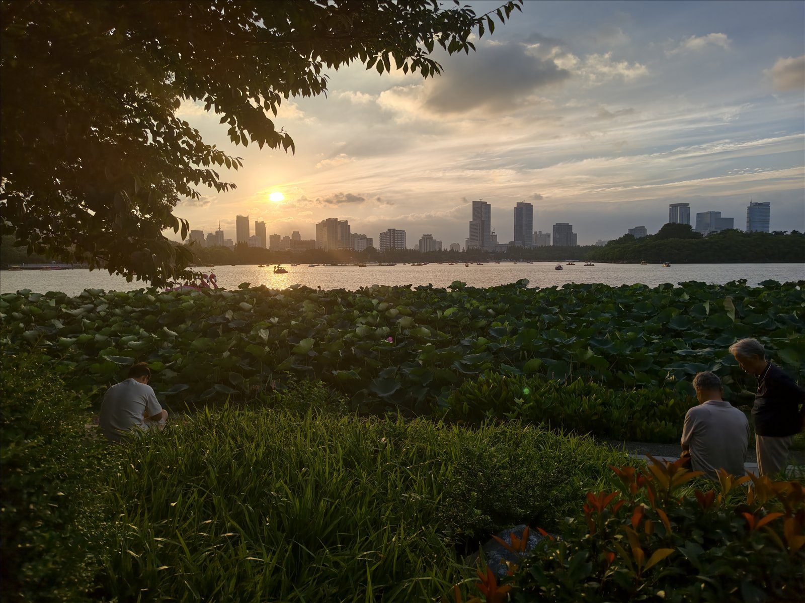
把回忆分成五页
有些日子记得特别清楚，有些只记得当时的光。翻到哪一页，就从哪一刻开始。
相册内页
点开一张，就能把那一刻看得更近一点。
花与灯火
白天在花树下挤进同一个镜头，晚上去看桥上亮起的灯。
坐在对面
一桌菜还没动筷，镜头已经先转向了对面的人。
桌上的第一张照片2026.07.02
餐桌这边看过去2026.08.01
餐桌这边看过去2026.07.06
餐桌这边看过去2026.08.02
餐桌这边看过去2026.08.02
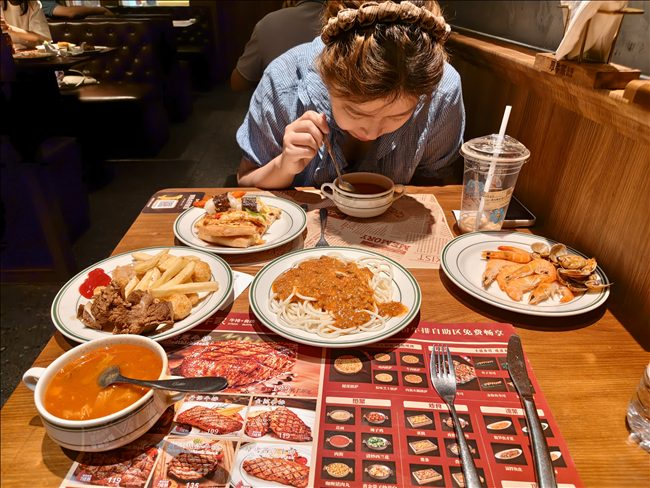
端上来的菜2026.07.05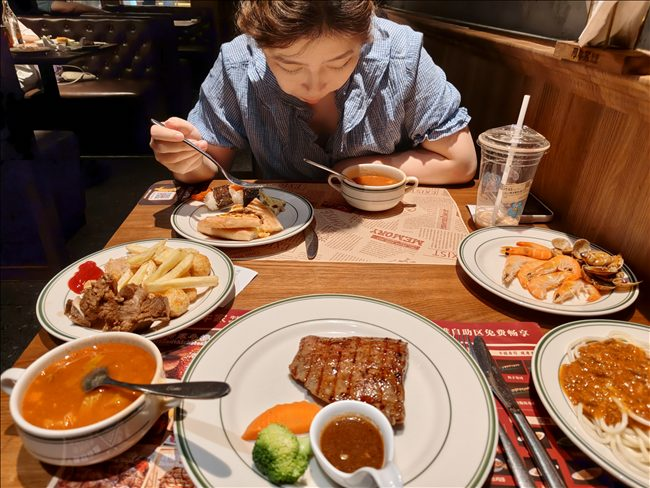
端上来的菜2026.07.05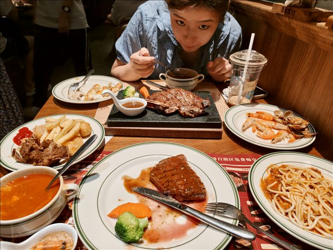
端上来的菜2026.07.05 暖灯下的晚饭2026.09.06 暖灯下的晚饭2026.09.06 暖灯下的晚饭2026.09.06 等一会儿再拍2026.07.04 等一会儿再拍2026.07.04 等一会儿再拍2026.07.04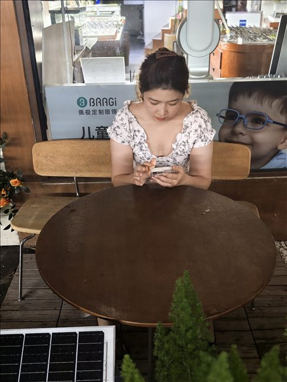
等一会儿再拍2026.07.05 拿起麦克风的时候2026.04.28 拿起麦克风的时候2026.04.28 拿起麦克风的时候2026.04.28 拿起麦克风的时候2026.04.28一起在路上
车窗、晚霞和林间的路，都被一路拍了下来。
车窗旁的粉色2026.09.02
车窗旁的粉色2026.09.02
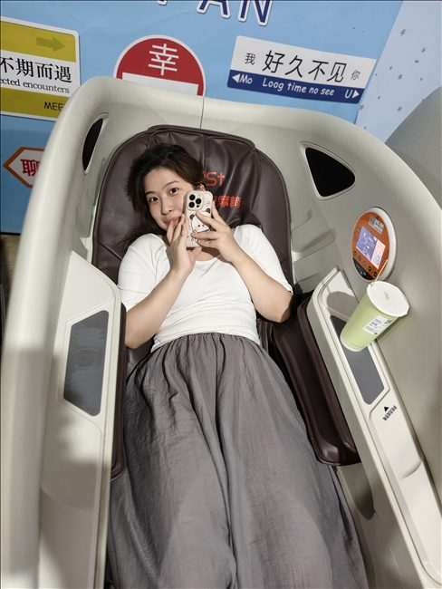
车窗旁的粉色2026.08.07 车上的两个人2026.09.02 车上的两个人2026.09.02 车上的两个人2026.09.02 车上的两个人2026.09.02 车上的两个人2026.09.02 车上的两个人2026.09.02 夜里的街边合照2026.09.02 夜里的街边合照2026.09.02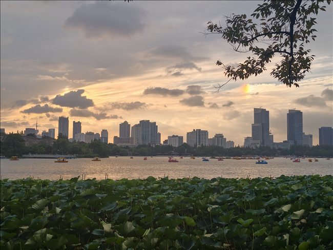
河岸的晚霞2026.09.03 河岸的晚霞2026.09.03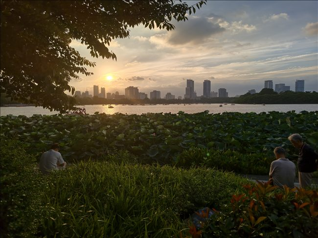
河岸的晚霞2026.09.03 树丛边的蓝色衣裙2026.09.03 树丛边的蓝色衣裙2026.09.03 树丛边的蓝色衣裙2026.09.03 树丛边的蓝色衣裙2026.09.03 树下的那条路2026.09.05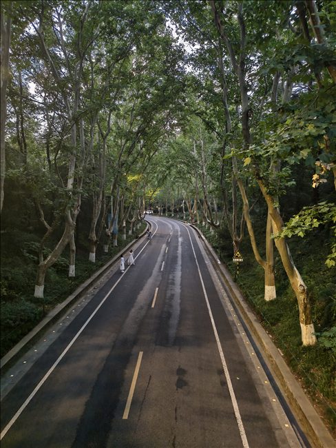
树下的那条路2026.09.05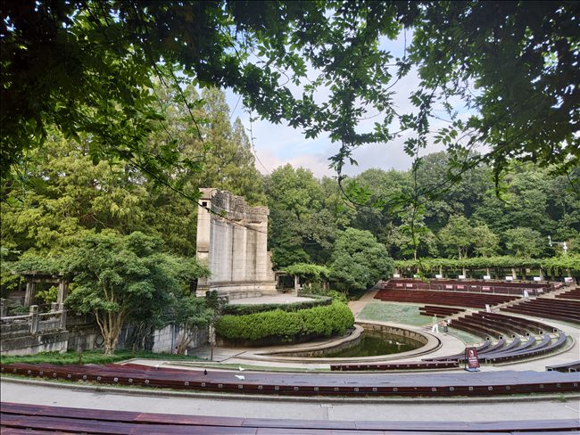
树下的那条路2026.09.05 在路上停下来合个影2026.09.05 在路上停下来合个影2026.09.05 在路上停下来合个影2026.09.05 在路上停下来合个影2026.09.05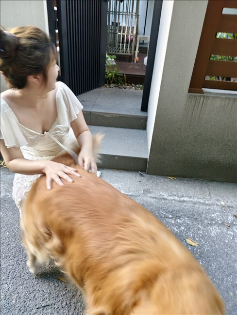
路边遇到一只狗2026.08.01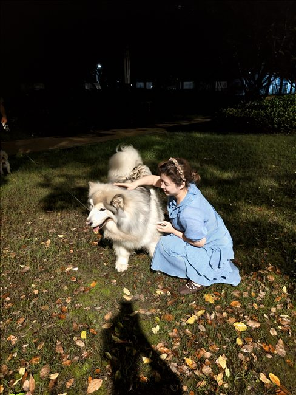
草地上的小狗2026.07.05镜头靠近一点
认真摆好的合照，和突然凑到镜头前的鬼脸，都想留下来。
靠在一起自拍相片 063
靠在一起自拍2026.07.19
靠在一起自拍2026.07.19
靠在一起自拍2026.07.19
靠在一起自拍2026.07.19
靠在一起自拍2026.07.19
逛街时的合照2026.07.19
逛街时的合照2026.07.19
逛街时的合照2026.07.19
彩色灯光里的合影2026.07.19
彩色灯光里的合影2026.07.19
彩色灯光里的合影2026.07.19
故意逗镜头2026.07.29
故意逗镜头2026.07.29
故意逗镜头2026.07.29
故意逗镜头2026.07.29
故意逗镜头2026.07.29
灰墙前的连拍2026.03.08
灰墙前的连拍相片 081
灰墙前的连拍相片 082
灰墙前的连拍相片 083
灰墙前的连拍相片 084
灰墙前的连拍相片 085
灰墙前的连拍相片 086
灰墙前的连拍相片 087
最近的距离2026.09.27
最近的距离2026.09.27
最近的距离2026.09.27
最近的距离2026.09.30
最近的距离2026.09.30
抱着玩偶入镜2026.10.01
抱着玩偶入镜2026.10.01
风吹过来的合照2026.10.06
风吹过来的合照2026.10.16
暖光下的自拍2026.10.17
暖光下的自拍2026.10.17
暖光下的自拍2026.11.06
夜晚的车里相片 100
夜晚的车里相片 101
夜晚的车里相片 102
光落下来的时候
白伞、花束和树影，把这一页留给两个人慢慢看。